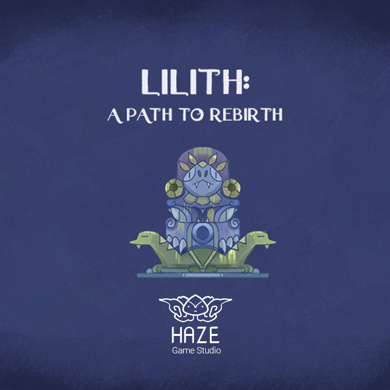
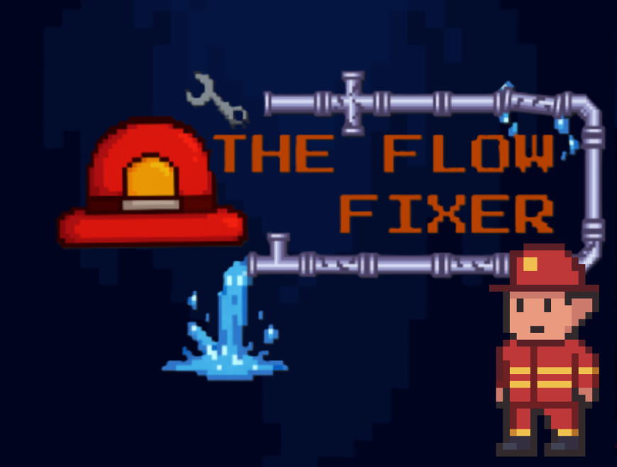
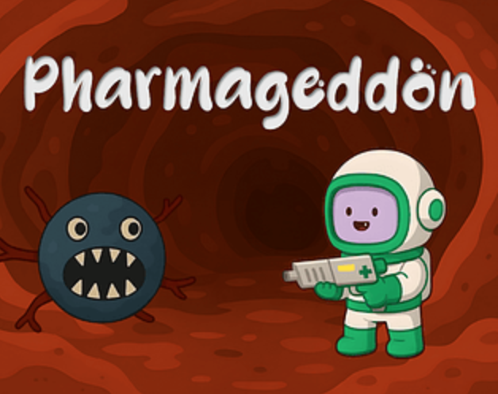
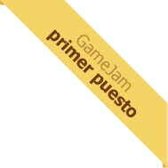
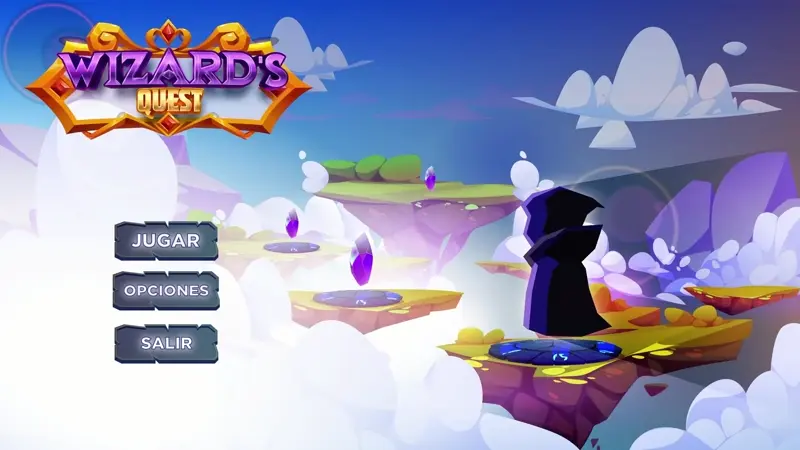
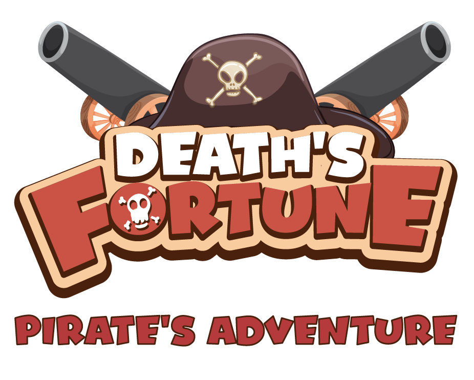
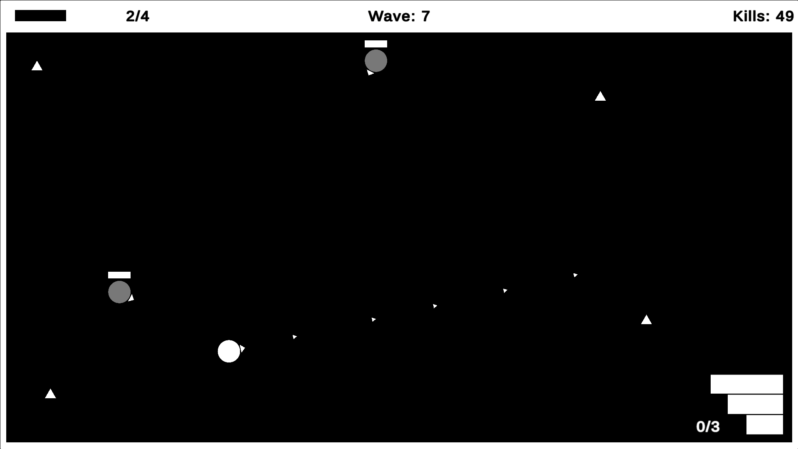
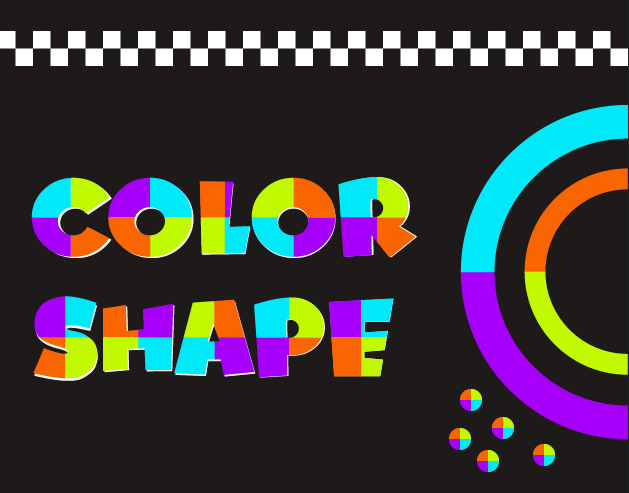
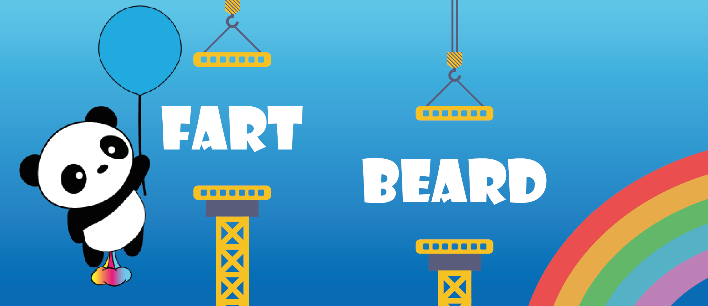

Projects
Products

Product 2025Lilith: A Path to Rebirth
I developed a Metroidvania-style game demo with a digital painting aesthetic. I designed atmospheric 2D layered environments and integrated all art, including ambiance and filler elements. I handled space illustration, implemented particles and shaders, and developed the level design from placeholders to the final version.
 Product
2024
Product
2024
Gamified Virtual Store
I developed and led a virtual reality experience for the Blancox and Refisal brands, creating an immersive store with product interaction, mini-games, animations, and voice-over narration, all optimized for Meta Quest 2. The project combined VR-adapted UI/UX and playful mechanics to enhance engagement, tested by over 400 people at the company’s Internal Innovation Fair, with excellent reception for its accessibility and impact.
 Product
2024
Product
2024
Occupational Safety Training
I developed an immersive virtual reality training to prevent accidents in the salt packaging area, focused on raising awareness about the correct use of Personal Protective Equipment (PPE). Through realistic simulations and immediate feedback on errors, the experience facilitates safe and emotionally impactful learning. I used Unity, VR Toolkit, and Autodesk Maya, optimizing a balance between effective training and user sensitivity. The training has improved staff safety, reducing risks and reinforcing best operational practices.
 Product
2022
Product
2022
IT Department Training
I developed an interactive virtual reality experience for the IT department induction, designed to immersively present the team’s processes, tools, and structure. I handled 3D modeling, scripting, interactive mechanics development, animations, and generative AI integration, optimizing everything for Meta Quest 2. It is currently used as an official onboarding tool, noted for its clarity and pedagogical value.
 Product
2024
Product
2024
Cybersecurity Training
I developed an interactive virtual reality training for administrative staff, focused on cybersecurity and preventing cyberattacks. I collaborated with experts to create educational content, designed game mechanics and 3D scenarios simulating real challenges, and integrated intuitive interfaces to facilitate VR learning. I used Unity, VR Toolkit, C#, and Adobe Suite to ensure an engaging and educational experience.
 Product
2023
Product
2023
Creative Challenges
I developed an immersive experience called "Creative Challenges" for a corporate fair, designed to motivate employees to generate innovative environmental ideas. I created the script for three interactive challenges, integrated videos and visuals, modeled 3D scenarios and objects with animations and particle effects, and programmed controlled interactive mechanics to avoid user disorientation. I used Unity, Adobe Suite, and multimedia scripting techniques. The experience was well-received and presented at the Bringeniando fair.
Game Jams

Game Jam 2025The Flow Fixer
The Flow Fixer is a 2D game developed in Unity during a one-day Game Jam with a four-person team. The game involves rotating and assembling pipes to guide water flow to a hydrant to extinguish a fire before time runs out. Basic rotation mechanics were implemented, UI/UX was designed, and Git was used for version control during development.

Game Jam 2025Pharmageddon
Pharmageddon is a sensory prototype developed during a Game Jam. The player distributes relief within a body to mitigate symptoms represented as obstacles. Cinemachine was used for camera control, Animator for animations, lighting systems for ambiance, and Object Pooling to optimize in-scene object management.

 Game Jam
2024
Game Jam
2024
ElRescatista
I developed the “El Rescatista” prototype during a three-day Game Jam, a puzzle game to free animals from traffickers. I implemented gameplay mechanics like pursuit, hiding, and distracting enemies, along with AI for the traffickers. I worked in a team, synchronizing tasks to meet the deadline. I used Unity, XR Toolkit, C#, and GitHub. The goal was to raise biodiversity awareness with an interactive and challenging experience for casual players.

Game Jam 2023Wizard's Quest
Wizard’s Quest is a 3D game developed in Unity during a Game Jam with a three-person team. Particle systems were implemented for visual effects, and Cinemachine was used for dynamic camera changes, with UI layers organized to optimize the experience. The game features platforming mechanics on floating islands, using runes and elemental powers to progress. The project was managed with GitHub for version control to facilitate collaboration.

Game Jam 2023DeathsFortune
DeathsFortune is a 3D game for a Game Jam where you control a pirate collecting coins on platforms while dodging cannon fire. Animator, Shader Graph, and Cinemachine were used for animations, visual effects, and dynamic camera.
Prototypes

Prototype 2025Cosmo Raid
Cosmo Raid is a 2D arcade shooter prototype with waves and progressive difficulty. I developed all mechanics, including object pooling for performance optimization, power-ups, VFX, and interfaces. The project allowed me to improve debugging and optimization, with functional versions and documented visual progress.

Prototype 2023ColorShape
Color Shape is a prototype where you must advance through walls matching your color. Objects in the level change your color, forcing you to adapt to progress.

Prototype 2023FartBear
FartBear is a Flappy Bird-style game that implements an object pooling system to optimize performance during movement and obstacle generation.